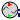

These models are not to be used for any purpose other than presenting figures in documentation.
Contains models whose visual appearance has been modified for documentation or publications.
Do not use for simulation purposes.
Extends from Modelica.Icons.InternalPackage (Icon for an internal package (indicating that the package should not be directly utilized by user)).
| Name | Description |
|---|---|
|  GenIO | GenIO for documentation/paper figure |
GenIO for documentation/paper figure
Do not use for simulation purposes, created only to generate a figure for documentation/papers.
Extends from OpenIPSL.Interfaces.Generator (Interface for a generator which provides the PwPin).
| Name | Description |
|---|---|
| Power flow data | |
| S_b | System base power [V.A] |
| V_b | Base voltage of the bus [V] |
| fn | System frequency [Hz] |
| P_0 | Initial active power [W] |
| Q_0 | Initial reactive power [var] |
| v_0 | Initial voltage magnitude [1] |
| angle_0 | Initial voltage angle [rad] |
| displayPF | Display power flow: |
| PSS | |
| Kw | Stabilizer gain (pu/pu) |
| Tw | Wash-out time constant (s) |
| T1 | First stabilizer time constant (s) |
| T2 | Second stabilizer time constant (s) |
| T3 | Third stabilizer time constant (s) |
| T4 | Fourth stabilizer time constant (s) |
| AVR | |
| vfmax | max lim. |
| vfmin | min lim. |
| K0 | regulator gain |
| Parameter mask | |
| enableS_b | Enable S_b in parameter list |
| enableV_b | Enable V_b in parameter list |
| enablefn | Enable fn in parameter list |
| enableP_0 | Enable P_0 in parameter list |
| enableQ_0 | Enable Q_0 in parameter list |
| enablev_0 | Enable v_0 in parameter list |
| enableangle_0 | Enable angle_0 in parameter list |
| enabledisplayPF | Enable displayPF in parameter list |
| Name | Description |
|---|---|
| pwPin | |
| uPSS | |
| upm | |
| uvsAVR | |
| AVRout | |
| AVRin |